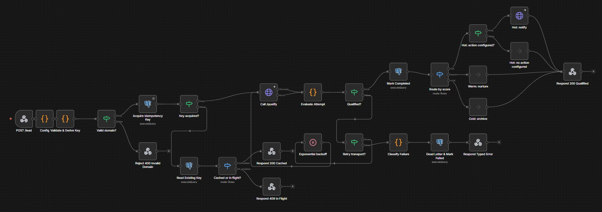

Give it a company domain and nothing else. It returns an enriched profile, a scored lead, a drafted outreach message, and a routing decision — and every step is traceable in SQL. The point isn't the LLM call; it's the orchestration discipline around it.
A public webhook takes {"domain": "stripe.com"}. Enrichment runs from free public sources (DNS, RDAP, a site scrape, a tech fingerprint), the profile is scored by an LLM behind a provider-agnostic interface, the model's JSON is validated against a schema, and the cost of the call is booked. Below is a real response from the deployed service.
// real response, trimmed { "domain": "stripe.com", "tier": "cold", "score": { "score": 15, "confidence": 0.85, "reasoning": "Established fintech; a vendor/platform, not a prospect for typical B2B services...", "draft_message": "Hi Stripe team — we noticed your infrastructure..." }, "profile": { "resolved": true, "technologies": ["Next.js", "React", "nginx"], "sources_ok": ["dns","whois","scrape","tech_fingerprint"], "sources_failed": [] }, "usage": { "model": "anthropic/claude-haiku-4.5", "input_tokens": 1202, "output_tokens": 166, "cost_usd": 0.002032 } }
The confidence is tied to how complete the profile was, so a thin profile yields a low-confidence score rather than a confident hallucination.
The draft_message is deliberately a starting point, not the headline: with a domain as the only input and a cheap, fast model chosen for cost, it reads generic by design. Personalizing against a specific offer or ICP is an extension point — a line drawn on purpose, not a limit hit by accident.
n8n is the visible skeleton; it never touches enrichment, prompts, or scoring. It deduplicates, calls one HTTP endpoint, retries transport failures, routes on a tier string, and dead-letters on exhaustion. FastAPI owns everything domain-specific and stays a pure function of its input — which is what makes the core reusable outside this workflow.
Key acquisition is a single INSERT … ON CONFLICT DO UPDATE … WHERE status='failed' RETURNING. Two concurrent submissions of the same key cannot both proceed.
A prior failed run is retryable; a completed one is served from cache and never re-routed — so a resubmission never re-fires a side effect or re-spends.
n8n retries transport failures (network / 5xx) with backoff. FastAPI runs a separate schema-repair loop that re-prompts the model with the validation error.
A network retry re-sends an identical request; a repair retry changes the prompt. Merging them would waste spend or leak domain logic into n8n.
Every LLM attempt is booked the moment it returns — repaired and failed ones included — so a model looping on garbage can't blind the daily ceiling.
Two real providers sit behind one interface; the OpenRouter path reads back the actual USD charge, so cost-per-lead is a measured number.
The model's JSON is parsed against a Pydantic schema. Invalid output is repaired within a bound or surfaced as a typed 422 — malformed data never reaches the caller.
The same schema is reusable by an eval harness that replays dead-lettered inputs.
Not a local mock run — a public n8n instance calling a deployed FastAPI service, scoring with a real model, backed by real Postgres.
| Situation | Status | What comes back | Verified |
|---|---|---|---|
| Bad or missing auth token | 403 | rejected by the webhook before the workflow starts — no execution, no spend | ✓ live |
| Missing / malformed domain | 400 | invalid_domain | ✓ live |
| Duplicate key, first run in flight | 409 | duplicate_in_flight — answered in 0.6s, no second pipeline | ✓ live |
| API error / retries exhausted | 422/502/503 | typed status + dead_letter_id to look up | ✓ live |
| Qualified | 200 | the validated QualifyResponse (~8s) | ✓ live |
| Same key replayed after success | 200 | the stored result in 0.65s — routing skipped | ✓ live |
200 (~8s), then the stored 200 (0.65s). Afterwards token_usage held exactly one row for that key — the replay re-ran nothing and spent nothing.
SELECT stage, detail FROM structured_logs
WHERE trace_id = 'shopify.com:2026-09-17';
enrichment_started
enrichment_completed {sources_ok: 4/4, completeness: 1.0}
request_completed {score: 8, cost_usd: 0.002112,
latency_ms: 4486, llm_attempts: 1}
Failures were driven at every stage; each is captured and queryable by failure_stage — a table beats an opaque queue for a reviewer.
The orchestration lives in an importable workflow: webhook auth, the atomic idempotency branch, the hand-built transport-retry loop, tier routing, and a dead-letter path that returns the API's real status code — plus a safety-net error workflow beneath it.

/qualify call and hand-built retry loop through the middle, tier routing and dead-lettering on the right.202 + poll pattern would be over-engineering. The escape hatch is documented for when volume needs it.The stack is a self-contained docker compose up — Postgres (schema auto-created), the API, and n8n — defaulting to a deterministic mock provider so a reviewer verifies the whole core on a clean machine with no keys. Point it at a real model with two environment variables.